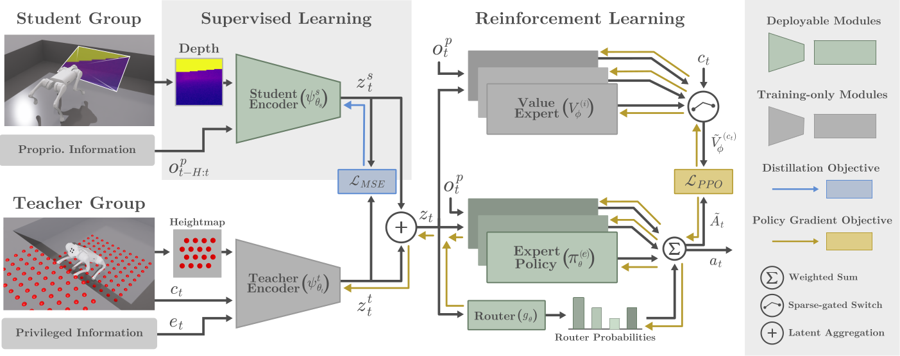
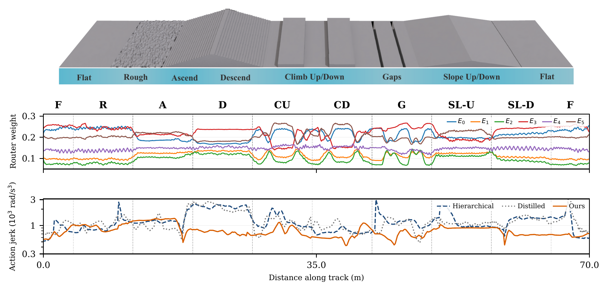
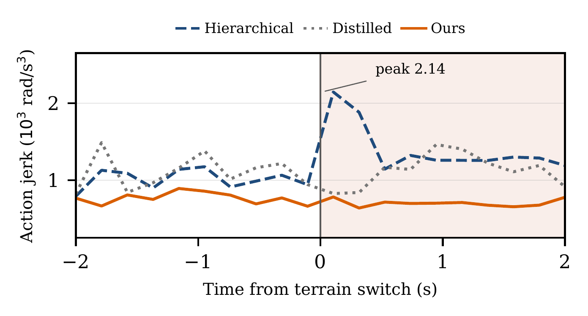
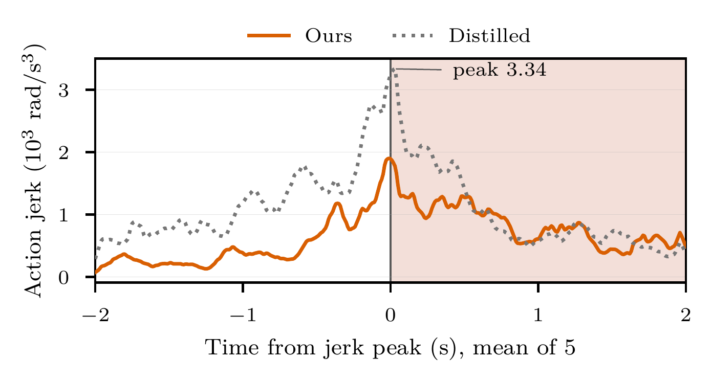
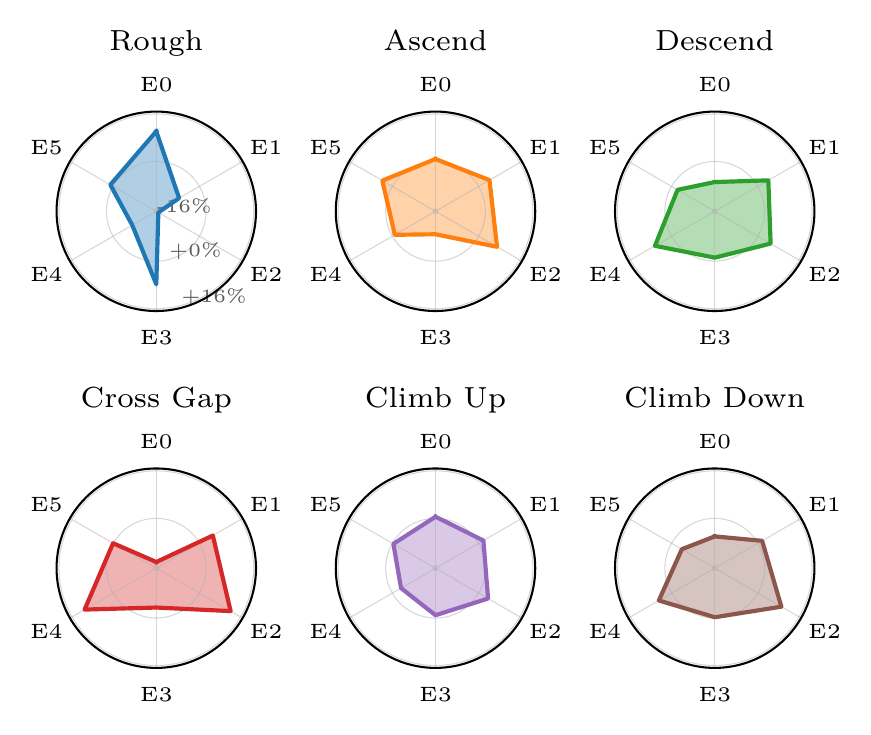
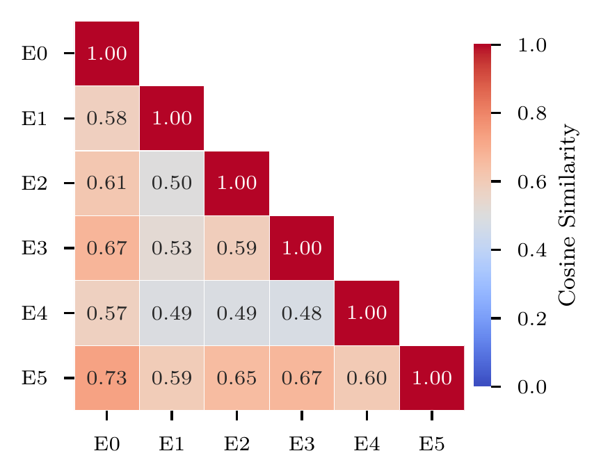

Perceptive legged locomotion across discontinuous terrain requires shared locomotion knowledge, task-specific maneuvers, and smooth transitions between them. Existing approaches train specialized policies independently and either switch among them with a hierarchical selector or distill them into a monolithic policy. Both fix the constituent behaviors before deployment, and both are assessed through aggregate course outcomes that leave behavior at terrain boundaries uncharacterized. We instead formulate multi-terrain locomotion as multi-task reinforcement learning and jointly train a perception-gated dense mixture-of-experts actor with task-specific critics: soft routing composes expert knowledge into continuously varying behavior, while separated critics isolate heterogeneous objectives so that specialization survives joint optimization. A concurrent teacher–student formulation transfers this composition from privileged terrain information to onboard depth, so that at deployment routing is inferred from perception alone, with no terrain label, selector, or distillation stage. Against hierarchical and DAgger-distilled baselines, the policy raises connected-course success to 93.3% from 73.3% and 53.3%, lowers mean action jerk by about a third across the course, and avoids the switching transient that hard selection introduces at boundaries. On a Unitree Go1, it completes an extended outdoor course in 10 of 10 trials and transfers to four outdoor terrain types.

Overview of CTS-MoE. Teacher and student groups are trained concurrently, extending CTS† to perceptive multi-terrain locomotion. Privileged information is encoded by the teacher, while the teacher latent is regressed by the student encoder from deployable observations. A shared mixture-of-experts actor, whose router composes the experts, is driven by both groups, and per-task values are provided by task-specific critics to stabilize PPO. At deployment, routing is inferred from perception alone.† CTS: Concurrent Teacher-Student Reinforcement Learning for Legged Locomotion (Wang et al., 2024).
- An asymmetric multi-task formulation in which task-specific rewards and critics isolate heterogeneous returns, so a single shared actor learns specialized behaviors jointly.
- A perception-conditioned MoE router, transferred to onboard depth, that composes these behaviors without a terrain label, selector, or distillation stage.
- A transition-centric evaluation against hierarchical and distilled baselines retrained under a matched protocol, measuring success on a connected course with held-out segments and switch-aligned action jerk, followed by hardware deployment on a Unitree Go1.
The policy was evaluated outdoors on terrains resembling the simulated ones, with 10 trials per terrain. Success was achieved in 100% of climb-down and slope trials, 80% of stair descents, and 70% of climb-ups. It also completed all 10 trials on an extended course combining rough terrain with 12–18 cm climb-up and climb-down obstacles.
Published results confound architecture with rewards, observations, terrains, and compute, so each method's defining architecture is retrained with our rewards and common protocol.
- Hierarchical (Oracle)Angarola et al. (2025), Wu et al. (2025)
- Terrain specialists selected by the true terrain index at training and inference. It is the only baseline that reads this index. On unseen terrain, which has no specialist, the flat specialist is used, as it performed best there.
- DistilledZhuang et al. (2023)
- The same specialists distilled into one policy with DAgger.
- Perceptive-SingleAgarwal et al. (2023)
- Depth and proprioception, with a single actor.
- Blind-MoEHuang et al. (2025)
- Proprioception only, with our MoE actor.
- Blind-SingleWang et al. (2024)
- Proprioception only, with a single actor.
A connected course tests whether joint training pays off during transitions. It concatenates the six training terrains with two held-out segments, rough ground and a slope ascent/descent pair, so composition is tested partly outside the trained task set. Over 15 trials at 0.5 m/s with a pure-pursuit controller, success requires completing every segment.

Connected-course evaluation. The multi-terrain map, the perception-conditioned router weights of our policy, and the action jerk along the same track, from top to bottom, with terrain boundaries aligned across the routing and jerk traces.
Hard selection introduces a transient at terrain boundaries; continuous composition avoids it. We measure action jerk with a third-order backward finite difference. CTS-MoE has the lowest jerk across the course, near terrain switches, and at the peak around a switch, where the gap is widest.
Peak around a switch
58% below hierarchical, 40% below distilled
Mean within ±2 s of a switch
40% below hierarchical, 34% below distilled
Mean across the course
32% below hierarchical, 34% below distilled

Simulation, aligned to terrain switches. Jerk averaged over all terrain switches of the connected course. The hierarchical policy shows a switching transient right after the boundary; ours does not.

Hardware, aligned to the five largest jerk peaks. Jerk averaged over each policy's five largest peaks, as ground-truth positions are unavailable to align transitions. The distilled policy peaks at 3.34×103 rad/s3, roughly twice ours.
Among deployable policies, CTS-MoE attains the best or tied success on every terrain. On unseen discrete terrain it reaches 73.3%, above 53.3% for the best deployable baseline, 20.0% for the hierarchical oracle, and 11.1% for the distilled policy. The mixture only helps with perception: over the six training terrains it is detrimental for blind policies (77.8% vs 83.0%) and beneficial for perceptive ones (96.3% vs 88.5%).
| Terrain | CTS-MoE Ours |
Perceptive-Single | Blind-MoE | Blind-Single | Hierarchical (Oracle) | Distilled |
|---|---|---|---|---|---|---|
| Flat | 100.0 | 100.0 | 100.0 | 97.8 | 100.0 | 100.0 |
| Ascend | 95.6 | 91.1 | 71.1 | 84.4 | 100.0 | 93.3 |
| Descend | 100.0 | 100.0 | 97.8 | 100.0 | 100.0 | 100.0 |
| Gap | 97.8 | 68.9 | 40.0 | 40.0 | 97.8 | 93.3 |
| Climb-Up | 86.7 | 75.6 | 62.2 | 77.8 | 80.0 | 64.4 |
| Climb-Down | 97.8 | 95.6 | 95.6 | 97.8 | 84.4 | 84.4 |
| Training average | 96.3 | 88.5 | 77.8 | 83.0 | 93.7 | 89.2 |
| Discrete* | 73.3 | 37.8 | 40.0 | 53.3 | 20.0 | 11.1 |
| Rough* | 100.0 | 100.0 | 100.0 | 100.0 | 100.0 | 100.0 |
Success rate (%) over 45 episodes per terrain, at forward commands of 0.5, 0.75, and 1.0 m/s. *Unseen during training.
Expert CompositionEach terrain exhibits a distinct but overlapping expert pattern, suggesting that terrain-dependent behavior emerges through compositions of shared experts rather than a one-to-one assignment. Off-diagonal cosine similarities range from 0.48 to 0.73, indicating shared action structure alongside substantial differences. Behavior is carried by the learned routing: replacing the router outputs with uniform weights at inference drops success to 2.2%.

Terrain-relative expert usage. Average routing weight of each expert on each terrain, relative to its mean usage across terrains.

Pairwise expert cosine similarity between the experts' mean actions.
Cite this work
@misc{affonso2026ctsmoe,
title={CTS-MoE: Implicit Terrain Adaptation via Mixture-of-Experts for Perceptive Locomotion},
author={Francisco Affonso and Matheus P. Angarola and Ana Luiza Mineiro and Aditya Potnis and Marcelo Becker and Girish Chowdhary},
year={2026},
eprint={2606.19633},
archivePrefix={arXiv},
primaryClass={cs.RO},
url={https://arxiv.org/abs/2606.19633},
}